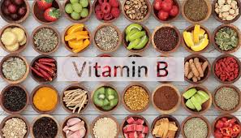

فيتامينات ب أو فيتامين ب المركب هي مجموعة من الفيتامينات تدخل في عملية التمثيل الغذائي وإنتاج الطاقة، وتلعب دورًا في وظائف المخ والأعصاب، علاوة على تعزيز صحة القلب، وتقوية العضلات، وتكوين كريات الدم الحمراء.
تتضمن أنواع فيتامينات B ما اتي:
فيتامين B1: يساعد فيتامين B1 أو ما يعرف بالثيامين (Thiamine) في الحفاظ على صحة القلب والأعصاب ووظائفها، كما يلعب دورا في إنتاج الطاقة من الكربوهيدرات.
فيتامين B2: يدخل فيتامين B2 أو ما يعرف الريبوفلافين (Riboflavin) أيضا في عملية إنتاج الطاقة في الجسم، علاوة على أهميته لسلامة الجلد، والشعر، والأظافر.
فيتامين B3: يساعد فيتامين B3 أو ما يعرف بالنياسين (Niacin) على إنتاج الطاقة من الغلوكوز، كما أن له خصائص مضادة للأكسدة.
فيتامين B5: يساهم فيتامين B5 أو ما يعرف بحمض البانتوثنيك (Pantothenic acid) في تخليق الأحماض الدهنية والأمينية، والنواقل العصبية، والهرمونات الستيرويدية.
فيتامين B6: يدخل فيتامين B6 أو ما يعرف بالبيريدوكسين (Pyridoxine) في تصنيع النواقل العصبية، كما يشارك في تكوين كريات الدم الحمراء والبيضاء، فضلا عن دوره في إنتاج الطاقة في الجسم.
فيتامين B7: يدخل فيتامين B7 أو ما يعرف بالبيوتين (Biotin) في العديد من عمليات التمثيل الغذائي، مثل: صناعة الغلوكوز، وتخليق الأحماض الدهنية، واستقلاب الأحماض الأمينية.
فيتامين B9: يلعب فيتامين B9 أو ما يعرف بحمض الفوليك (Folic acid) دورا هاموا في نمو الخلايا وتكوين الحمض النووي، علاوة على دوره في تكوين كريات الدم الحمراء والبيضاء.
فيتامين B12: يدخل فيتامين B12 أو ما يعرف بالكوبالامين (Cobalamin) أيضا في تخليق الحمض النووي، ويلعب دورا في انقسام الخلايا وتكوين كريات الدم الحمراء، علاوة على الحفاظ على وظائف المخ والأعصاب.

تتوفر فيتامينات ب في العديد من الأغذية، مثل:
الحليب والجبن.
البيض.
اللحوم الحمراء والدجاج.
الأسماك والمحار.
الخضروات، مثل: السبانخ، والأفوكادو، والبطاطا.
الفواكه، مثل: الحمضيات.
حبوب القمح الكاملة.
البقوليات، مثل:
الفاصولياء.
فول الصويا.
المكسرات والبذور
يمكن أن يؤدي عدم الحصول على ما يكفي الجسم من فيتامينات ب لفترة طويلة إلى الإصابة بالحالات الآتية: